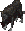
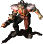

Ares
Description
Ares (The full name is Ares Rocket Silo) is one of toughest dungeons in whole FOnline2 game. The dungeon's maps itself were exported from old 2238 server. The Rocket Silo appears as the ruins of a pre-war nuclear missile launching site. Behind the large holey fences, there is a warehouse building with containers. Before the warehouse, there are three silo doors, one in particular open, suggesting this one was launched.
There is a crashed vertibird and some tents in the area, which should be checked for contents if you can survive long enough from the mutants to do so. There are also 3 underground levels. On the final 3rd level there is located an old armory which sometimes spawns the top items in the server like implants.
This dungeon is mostly thought as a team challenge and as such its a good option for a trip with more than 5 people. It is advised for your team to have some pretty tanky guys before entering as while surface fights can be kept long distanced, once your team start clearing off basement's levels you will be forced to fight on short distance which is not really great place for snipers to be in, however such builds are recommended for clearing the surface.
Enemies
| Wild Dog | Vital Statistics | Resistances (DT/DR) | Notes | ||||||||||||||||||
|---|---|---|---|---|---|---|---|---|---|---|---|---|---|---|---|---|---|---|---|---|---|
|  |
|
|
Doggies! | ||||||||||||||||||
| Mutant | Vital Statistics | Resistances (DT/DR) | Notes | ||||||||||||||||||
|---|---|---|---|---|---|---|---|---|---|---|---|---|---|---|---|---|---|---|---|---|---|
|
|
This mutie will spawn with one of following weapons: Minigun, Improved Flamer, Rocket Launcher, Light Support Weapon, Laser Rifle, and Plasma Rifle. | |||||||||||||||||||
| Commander | Vital Statistics | Resistances (DT/DR) | Notes | ||||||||||||||||||
|---|---|---|---|---|---|---|---|---|---|---|---|---|---|---|---|---|---|---|---|---|---|
|  |
|
|
He's Armed in Gatling Laser. Nice armor class. Award achievement after slaying.. | ||||||||||||||||||
Surface
Your team can enter from North or from South. In both cases you will be attacked by super mutants almost as soon as you spawn (perhaps north give a little more time). The south spawn is probably advised for a smaller groups, because while being attacked on very point of spawning you can still move to some nice cover composed of series of ruined walls on the right. Quickly getting there should allow to sustain a beachhead more easily than just direct fighting the Super Mutants on South spawn. North spawn is quite wide, should be quite comfortable for bigger groups to line up (like putting bursters on front, rocket launcher users in middle and snipers on back). There are mines on Northern exit!
Muties on surface are being placed in many various positions. 4 of them is guarding the south entrance. There is bunch of them constantly patrolling the left side of Area, while also many resides in the tents on the right part of map. 2 Super Mutants(Regular one and a Nightkin which can sometimes be armed in a Gatling!) are guarding the crashed vertibird.
Note:Due to very high perception of Super Mutants trying to sneak around them won't work. But once the Super Mutants are dead the whole big surface area becomes perfect place to put a sneaker or two so they can warm inside team about enemy players appearing on the scene.
Note:The mines are being placed on a wide line through the entire North exit, they are also placed on right edge of map till the fence. The south of map and left flank is mines free.
Level 1
After spawning a huge group of Super Mutants will try to stop your team. Its a very chaotic, messy close combat. Both you and friends, family and might try to use 1-hex tactic (first time i went into this dungeon a gatling wielder come in close enough to 1-hex me. The outcome could be easily worked out). This is one of toughest places in the whole dungeon. You can try placing your team members to the left side of the first room so they can get a little bit of cover as standing close to left wall will make Mutants unable to shoot you from the right window. A Shotgun or grenade user might be very helpful here as if you manage to stop the Mutants on doorway you practically won the fight on this level.
If your team failed here, don't worry too much but return from respawn point (and pray so the other teams won't notice you being defenseless at that point) this is why it is advised to clear whole surface before entering level 1 just so when you're team die you can still come back and regear without mutants trying to block your way.
Level 2
Even more Super Mutants! But this time you have a perfect defensive point. Its nice and easy level. This is the level where you can find a generator. Repairing it will activate the backdoor elevator. This elevator will only work for short while.
Note: While generator can be repaired even by person with low repair skill the better you are at fixing things the more time generator will be online.
Level 3
Just like spawning in level 1 the Mutants will attack you as soon as you spawn, except this time there's a chance a dungeon boss will arrive as well. If it happen that he join up too soon while you still fighting numerous guardians thee fight will be probably loss. To prevent that kill approaching mutants as fast as it's possible. The Mutants seems to be attacking the players that are closest to them so placing one tanky character in the right corner of the room just below the corridor, and giving him armor with +2 durable and enough super stimpaks to fuel up mini hospital should do the trick.
The Boss is strong. Angry. Deadly. Show him that you're better at all 3 mentioned points. The Mutants (Commander) chieftain has 20 action points. This means he can shoot twice in a row then he can send a one more burst just after a short while. After that he will be defenseless for a brief amount of time before he's action points regenerate. Take into consideration that he uses Gatling so wearing an Tesla Armor to fight him might be a good idea.
This level offers some nice loot. Some of the containers are protected by the look. The one box in the central room can sometimes spawn implants or tier 4 components. In extremely rare cases this box can even spawn two implants at the same time!
To leave the place you can go back the way you came in or go beyond the mined corridor to get to backdoor elevator. The backdoor elevator will only work if the generator on level 2 is functional.
Note: To be able to loot this level you need to kill all Mutants first.
Dungeon Maps
Ares has 4 maps.

Level 2
Points of Interest
Surface
- South spawn.
- North spawn.
- Vehicle spawn.
- Entrance to the underground levels.
- Elavator to the level 3 (Requires repairing a generator on level 2 first).
- c - Container, perhaps there is loot inside.
First Level
- Entrance.
- Elavator to level 2. -
- c - Container, perhaps there is loot inside.
Second Level
- Elavator to level 1.
- Generator - fixing it turn on backdoor elevator which you can find on level 3.
- Elavator to level 3.
- c - Container, perhaps there is loot inside.
Third Level
- Elavator to level 2.
- Elavator to Surface.
- c - Container, perhaps there is loot inside.
- c(!) - Container that has chance of spawning implant or tier 4 components.
- L - Locked container, perhaps there is loot inside.
Video Footage
- Acosta's Level 3 Solo Clearing.
| Fonline 2 Locations: | ||
|---|---|---|
| Towns: | * Boneyard * Broken Hills * The Den * Gecko * Junktown * Klamath * Modoc * New Reno * Redding * San Francisco * Shady Sands * The Hub * Vault City | |
| Dungeons: | * Ares * Toxic Caves * Vault 15 * Sierra Army Depot * Warehouse * Necropolis * Vault 12 * The Glow * Tanker's Holds * Mariposa Military Base * Cathedral | |
| Others: | * Caravan Depot * Brotherhood of Steel HQ * Navarro * Gas Station * Alcatraz * Unknow Residence * RocketBall | |